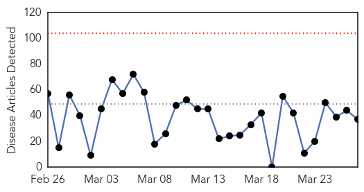
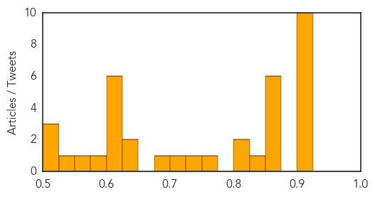
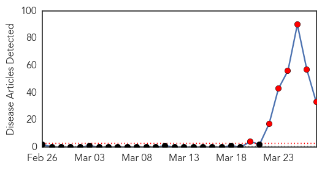
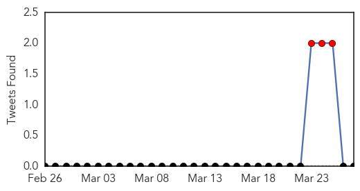
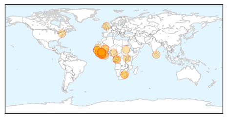

Unknown
30-Day Web Trend
0 alerts, 0 warnings

30-Day Twitter Trend
2 alerts, 0 warnings
Article Locations

Article Confidences
Top Articles:
- 0.920
- CDC releases ‘Salmonella Atlas’, contains over 40 years of data
- 0.917
- Chicago Tribune
- 0.917
- Chicago Tribune
- 0.917
- Chicago Tribune
- 0.917
- Chicago Tribune
- 0.917
- Chicago Tribune
- 0.917
- Chicago Tribune
- 0.910
- The world windows to Thailand
- 0.910
- The world windows to Thailand
- 0.900
- Typhoid cases climbing: CDC
- 0.866
- Australian authorities say Malaysia plane search shifts north
- 0.866
- Turkey could block other social media if security threatened
- 0.866
- France says Qatar agrees 2 bln eur helicopter order
- 0.855
- International Respiratory Societies to assist in finding the 3 million “missed” TB cases
- 0.852
- First cases alert: Cats spread TB to four people
- 0.851
- TB update: ‘If you wanted to get into any other country you would have to have health checks’ says Chatteris councillor.“
- 0.838
- Is your hospital failing?
- 0.817
- Greece has the highest rate of flu deaths in Europe
- 0.803
- Hospital Infection Rates Down, But Patients Still Dying Of Preventable Causes
- 0.750
- Greece Hit Hardest in Europe by Flu Virus
- 0.727
- PEDv Continues to Ravage Indiana Swine Herd
- 0.724
- News Scan for Mar 27, 2014
- 0.675
- One in 25 patients has an infection acquired during hospital stay, CDC says
- 0.631
- Hospital ratings show clear differences in safety, risk of dying
- 0.627
- Hospital ratings show sharp differences in safety, chance of dying
- 0.622
- The UK is sitting on a lung disease 'time bomb', respiratory expert warns
- 0.622
- The UK is sitting on a lung disease 'time bomb', respiratory expert warns
- 0.612
- At least 630 zika virus cases in Cook Islands - Cook Islands
- 0.610
- In A 'Historic Milestone' For Global Health, 80 Percent Of The World Has Beaten Polio
- 0.605
- Consumer Reports Ranks Hospitals on Safety
- 0.602
- MAINE COMPASS: Cutting back on public health nurses would harm our communities
- 0.576
- Is 'awareness' on health proving costly?
- 0.557
- India declared polio-free, but global risks persist
- 0.541
- India declared polio-free, but global risks persist
- 0.521
- Insecurity leads to drinking water shortage in North Darfur - Sudan
- 0.509
- Concern voiced about escalating violence in Darfur
- 0.508
- MSF Struggles to Help South Sudan Refugees in Uganda
Top Tweets:
-
No tweets found for Mar 27, 2014
Ebola
30-Day Web Trend
7 alerts, 0 warnings

30-Day Twitter Trend
3 alerts, 0 warnings

Article Locations
Article Confidences

Top Articles:
- 1.000
- West African nations scramble to contain Ebola
- 1.000
- Prolonged malaria or typhoid could be signs of Ebola
- 1.000
- Guinea: Ebola outbreak contained - Africa
- 1.000
- Updates on Guinea's Ebola Outbreak
- 1.000
- Experts urge caution over Ebola hopes
- 1.000
- Ghana MPs issue ebola alert!
- 1.000
- Guinea says Ebola outbreak contained, death toll rises
- 1.000
- Four Ebola cases confirmed in Guinea's capital
- 1.000
- NEWS ANALYSIS: Ebola treatments are a long time coming
- 1.000
- Ebola: Guinea outbreak reaches capital Conakry
- 1.000
- West African nations scramble to prevent spread of Ebola deaths
- 1.000
- Ebola Haemorrhagic Fever, Guinea (Situation as of 27 March 2014) - Guinea
- 1.000
- Guinea says has contained Ebola outbreak, death toll rises
- 1.000
- Deadly Ebola virus spreads from rural Guinea to capital
- 1.000
- Ebola virus reaches Guinea's capital Conakry
- 1.000
- 4 Health Care Workers Among 66 Dead in Ebola Outbreak
- 0.999
- Don't panic: Health groups working to contain Ebola epidemic in Guinea
- 0.999
- Ebola Outbreak Claims Two More Lives In Guinea
- 0.999
- FG Has Intensified Surveillance On Ebola Disease, Says Official
- 0.998
- Ivory Coast on alert for Ebola virus
- 0.998
- Four cases of Ebola confirmed in Guinean capital Conakry- Minister
- 0.998
- Scientist who discovered Ebola frustrated by Guinea outbreak
- 0.998
- Deadly Ebola outbreak in Guinea causes fear as death toll climbs.
- 0.997
- Scant funds, rare outbreaks leave Ebola drug pipeline slim
- 0.996
- Ebola virus disease in Guinea – update
- 0.996
- Nigeria holds consultations over Ebola outbreak in neighbouring Guinea
- 0.995
- Corgenix and Research Partners to Expand Ebola Virus Testing Capabilities in Sierra Leone
- 0.995
- Beware of bats: Guinea issues bushmeat warning after Ebola outbreak
- 0.995
- Beware of bats: Guinea issues bushmeat warning after Ebola outbreak
- 0.995
- Why Is This Ebola Outbreak Spreading?
- 0.994
- Guinea issues bushmeat warning after Ebola outbreak
- 0.985
- Death toll rises as Ebola outbreak is contained to Guinea’s remote south east
- 0.981
- To Thwart Ebola, Guinea Bans Bat-Eating
Top Tweets:
-
No tweets found for Mar 27, 2014